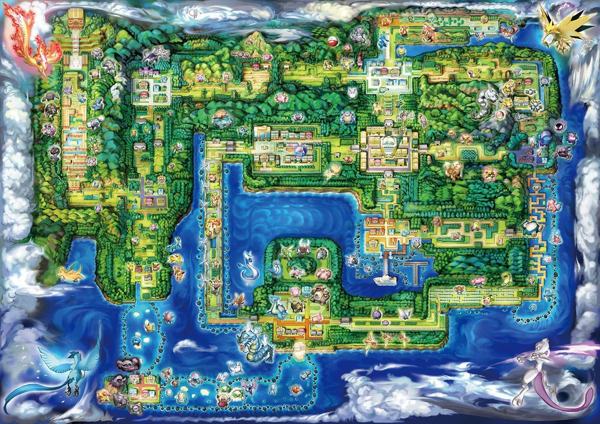
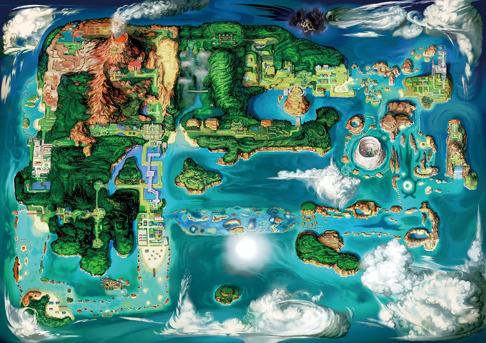
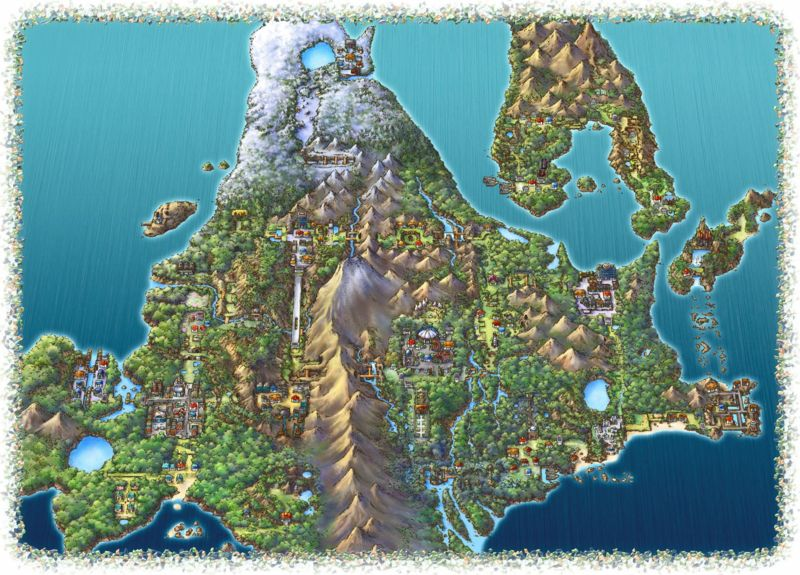
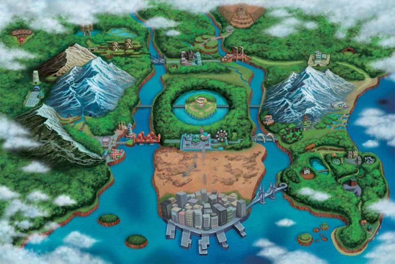
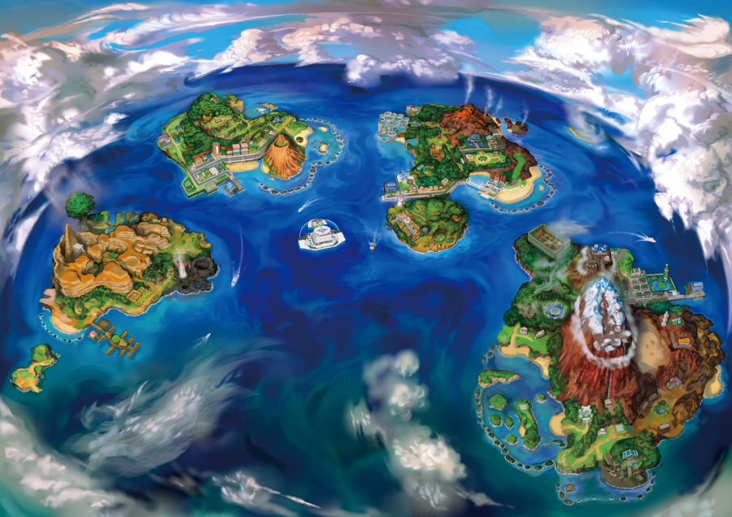
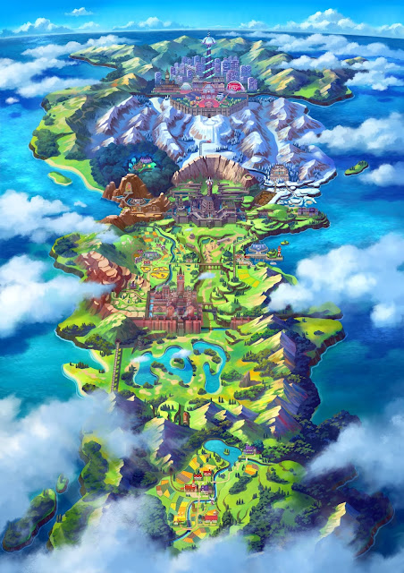
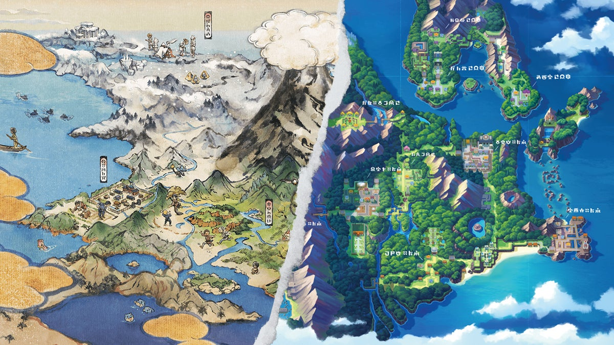
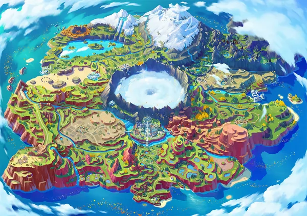

Qual a diferença de Região e Geração
Em Pokémon, "Região" e "Geração" são conceitos relacionados, mas têm significados ligeiramente diferentes:
Região: Uma região em Pokémon refere-se a uma área geográfica dentro do mundo dos jogos. Cada região é distinta e única em termos de geografia, clima, cultura e Pokémon nativos encontrados lá. Cada região costuma ser o cenário principal de um ou mais jogos da série principal de Pokémon.
Geração: Geração em Pokémon refere-se a uma fase específica de desenvolvimento dos jogos e da franquia como um todo. Cada nova geração geralmente é marcada pelo lançamento de novos jogos de Pokémon, juntamente com novos Pokémon, mecânicas de jogo, recursos e regiões. Cada geração normalmente introduz uma nova geração de Pokémon, que são novos Pokémon nunca antes vistos nos jogos anteriores. As gerações são numeradas sequencialmente, começando com a primeira geração (Gen 1), que inclui os jogos Pokémon Red e Blue, e continuando até a geração mais recente lançada. Ou seja, podemos usar como exemplo os jogos da 3° Geração cujo so jogos lançados nesta fase foram Pokémon Ruby, Sapphire e Emerald, que são ambientados na Rgião de Hoenn, e Pokémon FireRed e LeafGreen que são embientados na Região de Kanto
Em resumo, enquanto uma "região" se refere a uma área geográfica específica dentro do mundo Pokémon, uma "geração" se refere a uma fase específica de desenvolvimento da franquia, marcada pelo lançamento de novos jogos principais e a introdução de novos Pokémon e mecânicas de jogo.
Perante a issso, vamos ver um pouco mais de cada uma das Regiões de Pokémon, partindo da Região de Kanto até a Região de Paldea
Região de Kanto
A Região de Kanto foi a primeira região a ser criada, sendo o palco principal dos eventos dos jogos Pokémon Red/Blue/Green, Pokémon Yellow, Pokémon FireRed/LeafGreen e Pokémon Let 's Go, Pikachu!/Let 's Go, Eevee!
Esta região foi inspirada na própria região de Kanto no Japão, que inclui as cidades de Tóquio, Gunma, Saitama, Chiba e Kanagawa. A geografia do local foi a inspiração para a criação do mapa da região que vemos nos jogos.
Assim como em todo jogo Pokémon, nesta região temos de escolher nosso Pokémon inicial para começarmos nossa jornada, e nessa região são eles Bulbasaur (tipo planta e venenoso), Charmander (tipo fogo) e Squirtle (tipo água). Bem como a presença dos Pokémon mais fortes de cada região, os Pokémon Lendários e Míticos, sendo os lendários Articuno, Zapdos, Moltres e Mewtwo, e o Pokémon Mítico Mew.
Nosso objetivo como protagonista da região de Kanto é derrotar todos os 8 ginásios da região, vencer a Elite dos 4 e nos consagrarmos campeões da região de Kanto. Além disso, devemos derrotar a infame Equipe Rocket, cujo plano é dominar o mundo através do uso e exploração de Pokémon, muitas vezes fazendo-os sofrer maus-tratos e até mesmo os matando, caso não sejam mais úteis para seus planos malignos. Podemos citar como um exemplo desses maus-tratos os eventos da famosa Torre Lavender (Lavender Town), onde eles matam a mãe do Pokémon chamado Cubone, e ela volta como um espírito Pokémon vingativo, sendo acalmada graças à nossa ajuda como protagonistas.
Os 8 ginásios desta região têm a função de lhe conceder insígnias assim que derrotar os seus líderes. Cada ginásio também é protagonizado por um dos 18 tipos de Pokémon (excluindo o tipo ??? e o tipo Estelar), sendo eles:
Pedra (Líder de ginásio: Brock);
Água (Líder de ginásio: Misty);
Elétrico (Líder de ginásio: Lt. Surge);
Planta (Líder de ginásio: Erika);
Psíquico (Líder de ginásio: Sabrina);
Venenoso (Líder de ginásio: Koga/Janine);
Fogo (Líder de ginásio: Blaine) e
Terra (Líder de ginásio: Giovanni, e também líder da Equipe Rocket).
Após derrotá-los, o caminho para Victory Road (Rota da Vitória) será libertado e você poderá desafiar os quatro treinadores mais fortes de Kanto, a Elite dos 4, sendo eles:
Lorelei (treinadora de tipo Gelo);
Bruno (treinador de tipo Lutador);
Agatha (treinadora de tipo Fantasma) e
Lance (treinador de tipo Dragão).
Tudo bem que eles usam alguns Pokémon que não são da tipagem proposta pelos mesmos, mas como era a 1ª geração de Pokémon, a disponibilidade não era muito grande. Assim que finalizar os 4, você enfrentará seu rival em uma batalha decisiva para ver quem é o mais forte. Assim que derrotá-lo, você se torna o novo campeão da região de Kanto.
 Mapa da Região de Kanto
Região de Johto
A Região de Johto foi a segunda região a ser criada, sendo o palco principal dos eventos dos jogos Pokémon Gold/Silver, Pokémon Crystal e Pokémon HeartGold/SoulSilver.
Esta região foi inspirada na região de Kansai no Japão, que inclui as cidades de Osaka, Kyoto e Wakayama. Além disso, Johto também se inspira na região de Chubu, que inclui as províncias de Nagano, Shizuoka e Aichi. Essa diversidade de inspirações contribuiu para as diversas cidades e paisagens que temos nos jogos.
Assim como em todo jogo Pokémon, nesta região temos de escolher nosso Pokémon inicial para começarmos nossa jornada, e nessa região são eles Chikorita (tipo planta), Cyndaquil (tipo fogo) e Totodile (tipo água). Bem como a presença dos Pokémon mais fortes de cada região, os Pokémon Lendários e Míticos, sendo os lendários Raikou, Entei, Suicune, Ho-Oh e Lugia, e o Pokémon Mítico Celebi.
Um detalhe curioso é que a Região de Johto divide a fronteira oeste com Kanto. Então, nos jogos que se passam em Johto, sempre no “pós-game”, o protagonista retorna à primeira região de Pokémon, onde ele enfrenta novamente os líderes de ginásio e a Elite 4, se tornando campeão de ambas as regiões. Além disso, ele enfrenta o antigo campeão de Kanto, que seria o protagonista do jogo anterior, representado pelo treinador conhecido como Red, o último desafio do jogo. Essa conexão com Kanto faz muitos jogadores olharem Johto como se fosse uma “parte 2” da Região de Kanto, sem contar que a Pokédex de ambas as regiões é similar, com Johto incorporando a Pokédex de Kanto à sua própria.
Nosso objetivo como protagonista da região de Johto é derrotar todos os 8 ginásios da região, vencer a Elite dos 4 e nos consagrarmos campeões da região de Johto. Também devemos derrotar a infame Equipe Rocket, que, após os ocorridos dos jogos anteriores (Pokémon Red/Blue/Green, Pokémon Yellow e Pokémon FireRed/LeafGreen), está em ruínas e próxima de ser desfeita graças à derrota de Giovanni pelo protagonista do jogo anterior. Portanto, seu objetivo de dominar o mundo fica de lado, e surge um novo objetivo: restaurar a antiga glória da Equipe Rocket.
Os 8 ginásios desta região têm a função de lhe conceder insígnias assim que derrotar os seus líderes. Cada ginásio também é protagonizado por um dos 18 tipos de Pokémon (excluindo o tipo ??? e o tipo Estelar), sendo eles:
Voador (Líder de ginásio: Falkner);
Inseto (Líder de ginásio: Bugsy);
Normal (Líder de ginásio: Whitney);
Fantasma (Líder de ginásio: Morty);
Lutador (Líder de ginásio: Chuck);
Metal (Líder de ginásio: Jasmine);
Gelo (Líder de ginásio: Pryce) e
Dragão (Líder de ginásio: Clair).
Após derrotá-los, o caminho para Victory Road (Rota da Vitória) será libertado e você poderá desafiar os quatro treinadores mais fortes de Johto, a Elite dos 4, sendo eles:
Will (treinador de tipo Psíquico);
Koga (treinador de tipo Venenoso);
Bruno (treinador de tipo Lutador) e
Karen (treinadora de tipo Sombrio).
Tudo bem que eles usam alguns Pokémon que não são da tipagem proposta pelos mesmos, mas como era ainda a 2ª geração de Pokémon, a disponibilidade não era muito grande, embora maior que a da 1ª geração. Assim que finalizar os 4, você enfrentará o campeão de Johto, protagonizado pelo antigo Elite 4 Lance, do tipo Dragão. Assim que derrotá-lo, você se torna o novo campeão da região de Johto.

Mapa da Região de Johto
Região de Hoenn
A Região de Hoenn foi a terceira região a ser criada, sendo o palco principal dos eventos dos jogos Pokémon Ruby/Sapphire, Pokémon Emerald e Pokémon Omega Ruby/Alpha Sapphire.
Esta região foi inspirada na região mais ao sul do país, a Ilha Kyushu no Japão, que inclui a região de Kansai e as cidades de Osaka, Kyoto e Wakayama. Além disso, Hoenn também se inspira na região de Chubu, que inclui as províncias de Nagano, Shizuoka e Aichi. Essa diversidade de inspirações contribuiu para as diversas cidades e paisagens que temos nos jogos.
Assim como em todo jogo Pokémon, nesta região temos de escolher nosso Pokémon inicial para começarmos nossa jornada, e nessa região são eles Treecko (tipo planta), Torchic (tipo fogo) e Mudkip (tipo água). Bem como a presença dos Pokémon mais fortes de cada região, os Pokémon Lendários e Míticos, sendo os lendários Regirock, Regice, Registeel, Latias, Latios, Kyogre, Groudon e Rayquaza, e os Pokémon Míticos Jirachi e Deoxys.
Nosso objetivo como protagonista da região de Hoenn é derrotar todos os 8 ginásios da região, vencer a Elite dos 4 e nos consagrarmos campeões da região de Hoenn e impedir os planos das duas equipes vilãs, Equipe Aqua (que quer expandir o mar usando os poderes de Kyogre) e a Equipe Magma (que quer expandir a superfície terrestre usando os poderes de Groudon).
Os 8 ginásios desta região têm a função de lhe conceder insígnias assim que derrotar os seus líderes. Cada ginásio também é protagonizado por um dos 18 tipos de Pokémon (excluindo o tipo ??? e o tipo Estelar), sendo eles:
Pedra (Líder de ginásio: Roxanne);
Lutador (Líder de ginásio: Brawly);
Elétrico (Líder de ginásio: Wattson);
Fogo (Líder de ginásio: Flannery);
Normal (Líder de ginásio: Norman, que também é o pai do protagonista);
Voador (Líder de ginásio: Winona);
Psíquico (Líderes de ginásio: Tate e Liza) e
Água (Líder de ginásio: Wallace/Juan).
Após derrotá-los, o caminho para Victory Road (Rota da Vitória) será libertado e você poderá desafiar os quatro treinadores mais fortes de Hoenn, a Elite dos 4, sendo eles:
Sidney (treinador de tipo Sombrio);
Phoebe (treinadora de tipo Fantasma);
Glacia (treinadora de tipo Gelo) e
Drake (treinador de tipo Dragão).
Ao contrário das gerações anteriores, a partir desta Elite 4, todos usam Pokémon condizentes ao seu tipo proposto. Assim que finalizar os 4, você enfrentará o campeão de Hoenn, protagonizado por Steven. Assim que derrotá-lo, você se torna o novo campeão da região de Hoenn.

Mapa da Região de Hoenn
Região de Sinnoh
A Região de Sinnoh foi a quarta região a ser criada, sendo o palco principal dos eventos dos jogos Pokémon Diamond/Pearl, Pokémon Platinum e Pokémon Brilliant Diamond/Shining Pearl.
Esta região foi inspirada na ilha mais ao norte do Japão, Hokkaido. Essa região é conhecida pelo seu clima frio e paisagens deslumbrantes, bem similar ao ambiente dos jogos que se passam nesta região. Além disso, por muito tempo, essa foi a última região a ser inspirada em um lugar do Japão. Porém, na 9ª geração de jogos, as inspirações em locais japoneses retornaram.
Assim como em todo jogo Pokémon, nesta região temos de escolher nosso Pokémon inicial para começarmos nossa jornada, e nessa região são eles Turtwig (tipo planta), Chimchar (tipo fogo) e Piplup (tipo água). Bem como a presença dos Pokémon mais fortes de cada região, os Pokémon Lendários e Míticos, sendo os lendários Uxie, Mesprit, Azelf, Dialga, Palkia, Heatran, Regigigas, Giratina e Cresselia, e os Pokémon Míticos Phione, Manaphy, Darkrai, Shaymin e Arceus.
Nosso objetivo como protagonista da região de Sinnoh é derrotar todos os 8 ginásios da região, vencer a Elite dos 4 e nos consagrarmos campeões da região de Sinnoh, além de impedir os planos da Equipe Galáctica, que, através dos Pokémon lendários Dialga (tempo) e Palkia (espaço), quer criar um novo universo no qual eles são os governantes.
Os 8 ginásios desta região têm a função de lhe conceder insígnias assim que derrotar os seus líderes. Cada ginásio também é protagonizado por um dos 18 tipos de Pokémon (excluindo o tipo ??? e o tipo Estelar), sendo eles:
Pedra (Líder de ginásio: Roark);
Planta (Líder de ginásio: Gardenia);
Lutador (Líder de ginásio: Maylene);
Água (Líder de ginásio: Crasher Wake);
Fantasma (Líder de ginásio: Fantina);
Metal (Líder de ginásio: Byron);
Gelo (Líder de ginásio: Candice) e
Elétrico (Líder de ginásio: Volkner).
Após derrotá-los, o caminho para Victory Road (Rota da Vitória) será libertado e você poderá desafiar os quatro treinadores mais fortes de Sinnoh, a Elite dos 4, sendo eles:
Aaron (treinador de tipo Inseto);
Bertha (treinadora de tipo Terra);
Flint (treinador de tipo Fogo) e
Lucian (treinador de tipo Psíquico).
Assim que finalizar os 4, você enfrentará o campeão de Sinnoh, protagonizado por Cynthia. Assim que derrotá-la, você se torna o novo campeão da região de Sinnoh.

Mapa da Região de Sinnoh
Região de Unova
A Região de Unova foi a quinta região a ser criada, sendo o palco principal dos eventos dos jogos Pokémon Black/White e Pokémon Black 2/White 2.
Esta região foi inspirada em Nova York (EUA), uma quebra na tradição de fazer uma região inspirada em um local do Japão. Assim como Nova York, a região de Unova é diversificada com influências culturais diferentes, e sua fauna e flora são bem representadas nisso.
Assim como em todo jogo Pokémon, nesta região temos de escolher nosso Pokémon inicial para começarmos nossa jornada, e nessa região são eles Snivy (tipo planta), Tepig (tipo fogo) e Oshawott (tipo água). Bem como a presença dos Pokémon mais fortes de cada região, os Pokémon Lendários e Míticos, sendo os lendários Cobalion, Terrakion, Virizion, Tornadus, Thundurus, Reshiram, Zekrom, Landorus e Kyurem, e os Pokémon Míticos Victini, Keldeo, Meloetta e Genesect.
Nosso objetivo como protagonista da região de Unova é derrotar todos os 8 ginásios da região, vencer a Elite dos 4, nos consagrarmos campeões da região de Unova e impedir os planos da Equipe Plasma. Esta equipe tem como objetivo libertar os Pokémon dos treinadores. A primeira vista, isso não parece algo ruim, porém, as segundas intenções de dominação mundial que seus líderes têm os fazem perigosos e precisam ser parados.
Os 8 ginásios desta região têm a função de lhe conceder insígnias assim que derrotar os seus líderes. Cada ginásio também é protagonizado por um dos 18 tipos de Pokémon (excluindo o tipo ??? e o tipo Estelar), sendo eles:
Normal (Líder de ginásio: Cilan, Chili e Cress);
Inseto (Líder de ginásio: Burgh);
Elétrico (Líder de ginásio: Elesa);
Terra (Líder de ginásio: Clay);
Voador (Líder de ginásio: Skyla);
Gelo (Líder de ginásio: Brycen);
Psíquico (Líder de ginásio: Shauntal) e
Dragão (Líder de ginásio: Drayden/Iris).
Após derrotá-los, o caminho para Victory Road (Rota da Vitória) será libertado e você poderá desafiar os quatro treinadores mais fortes de Unova, a Elite dos 4, sendo eles:
Shauntal (treinadora de tipo Fantasma);
Marshal (treinador de tipo Lutador);
Grimsley (treinador de tipo Sombrio) e
Caitlin (treinadora de tipo Psíquico).
Assim que finalizar os 4, você enfrentará o campeão de Unova, protagonizado por Alder/Iris. Assim que derrotá-la, você se torna o novo campeão da região de Unova.

Mapa da Região de Unova
Região de Kalos
A Região de Kalos foi a sexta região a ser criada, sendo o palco principal dos eventos dos jogos Pokémon X/Y e futuramente Pokémon AZ (ainda não lançado).
Esta região foi inspirada na França, em especial Paris, sendo repleta de referências à cultura francesa, como cafés, moda e culinária. O nome dos Pokémon, a geografia da região e os designs foram inspirados na cultura e tradições francesas.
Assim como em todo jogo Pokémon, nesta região temos de escolher nosso Pokémon inicial para começarmos nossa jornada, e nessa região são eles Chespin (tipo planta), Fennekin (tipo fogo) e Froakie (tipo água). Bem como a presença dos Pokémon mais fortes de cada região, os Pokémon Lendários e Míticos, sendo os lendários Xerneas, Yveltal e Zygarde, e os Pokémon Míticos Diancie, Hoopa e Volcanion.
Vale ressaltar que foi nesta região onde se concentrou o estudo da mecânica do jogo (que perdurou até a saga de jogos Sun/Moon e UltraSun/UltraMoon), as Mega Evoluções e foi nela onde se descobriu a maioria delas também juntamente com Hoenn (especificamente nos jogos Pokémon Omega Ruby/Alpha Sapphire).
Nosso objetivo como protagonista da região de Kalos é derrotar todos os 8 ginásios da região, vencer a Elite dos 4 e nos consagrarmos campeões da região de Kalos, além de impedir os planos da Equipe Flare, que consiste em criar um mundo “mais belo” destruindo o atual com os poderes de Xerneas ou Yveltal utilizando a Arma Ancestral que quase devastou a região de Kalos no passado.
Os 8 ginásios desta região têm a função de lhe conceder insígnias assim que derrotar os seus líderes. Cada ginásio também é protagonizado por um dos 18 tipos de Pokémon (excluindo o tipo ??? e o tipo Estelar), sendo eles:
Inseto (Líder de ginásio: Viola);
Pedra (Líder de ginásio: Grant);
Lutador (Líder de ginásio: Korrina);
Planta (Líder de ginásio: Ramos);
Elétrico (Líder de ginásio: Clemont);
Fada (Líder de ginásio: Valerie);
Psíquico (Líder de ginásio: Olympia) e
Gelo (Líder de ginásio: Wulfric).
Após derrotá-los, o caminho para Victory Road (Rota da Vitória) será libertado e você poderá desafiar os quatro treinadores mais fortes de Kalos, a Elite dos 4, sendo eles:
Malva (treinadora de tipo Fogo);
Siebold (treinador de tipo Água);
Wikstrom (treinador de tipo Metal) e
Drasna (treinadora de tipo Dragão).
Assim que finalizar os 4, você enfrentará o campeão de Kalos, protagonizado por Diantha. Assim que derrotá-la, você se torna o novo campeão da região de Kalos.

Mapa da Região de Kalos
Região de Alola
A Região de Alola foi a sétima região a ser criada, sendo o palco principal dos eventos dos jogos Pokémon Sun/Moon e Pokémon Ultra Sun/Ultra Moon.
Esta região foi inspirada no Havaí e em quatro ilhas específicas, sendo elas a Ilha Oahu (que se tornou inspiração para a Ilha de Melemele), a Ilha Maui (que se tornou inspiração para a Ilha de Akala), a Ilha Hawaii/Big Island (que se tornou inspiração para a Ilha de Ula’ula) e a Ilha de Kauai (que se tornou inspiração para a Ilha de Poni). Cada ilha havaiana reflete suas características nas ilhas da região de Alola. Outro detalhe interessante é que cada ilha de Alola tem o nome de cores escritas em havaiano: Melemele é amarelo, Akala é rosa, Ula’ula é vermelho e Poni é roxo. Isso é tão aparente que se reflete na coloração dos Pokémon Lendários, sendo um para cada ilha.
Assim como em todo o jogo Pokémon, nesta região temos de escolher nosso Pokémon inicial para começarmos nossa jornada, e nessa região são eles Rowlet (tipo planta), Litten (tipo fogo) e Popplio (tipo água). Bem como a presença dos Pokémon mais fortes de cada região, os Pokémon Lendários e Míticos, sendo os lendários Type: Null, Silvally, Tapu Koko, Tapu Lele, Tapu Bulu, Tapu Fini, Cosmog, Cosmoem, Solgaleo, Lunala e Necrozma, e os Pokémon Míticos Magearna, Marshadow, Zeraora, Meltan e Melmetal. Além desses Pokémon super poderosos, nessa região foi introduzida uma nova classe de criaturas, as Ultra Criaturas/Ultra Beasts, Pokémon extradimensionais trazidos de outros universos pelos Ultra Buracos-de-Minhoca/Ultra Wormholes abertos pelos lendários Solgaleo, Lunala e Necrozma, sendo eles Nihilego, Buzzwole, Pheromosa, Xurkitree, Celesteela, Kartana, Guzzlord, Poipole, Naganadel, Stakataka e Blacephalon.
O que foi trazido de novo nesta geração foi a mecânica de Z-Moves e das formas regionais. As formas regionais são puramente formas alternativas que alguns Pokémon de Kanto adquiriram quando migraram para a região de Alola, ficando conhecidos na comunidade como Alola Forms, e essa tradição de formas regionais por adaptação foi se propagando até a mais recente geração (9ª).
Diferente das gerações anteriores, onde sua missão era derrotar os líderes de ginásio, na região de Alola devemos completar as Trials e Grand Trials, que são desafios que devemos realizar como objetivo principal como protagonista, vencer a Elite dos 4 e nos consagrarmos campeões da região de Alola e impedir as duas equipes vilãs (sim, isso retorna e perdura até a 9ª geração): o Team Skull (que deseja apenas causar o caos, sendo mais uma gangue de rua do que uma equipe rival, como as que tivemos anteriormente na franquia) e a Fundação Aether (esta, inicialmente, parece querer proteger os Pokémon, mas revela seus principais objetivos ao querer controlar o Ultra Espaço e explorar as Ultra Beasts).
Os 8 ginásios desta região foram substituídos pelas Trials e Grand Trials (ao final de cada Trial, você ganhará um Z-Crystal correspondente ao elemento do desafio), totalizando 11 desafios no total. No final de cada Trial, o protagonista enfrenta um Pokémon Totem, que é um Pokémon maior e mais forte do que o normal, com estatísticas melhoradas. Esses Totem Pokémon podem chamar aliados para ajudar durante a batalha, tornando o desafio ainda mais difícil. Sendo eles:
Totem Gumshoos (Ultra Sun) / Totem Alolan Raticate (Ultra Moon) (Ilha de Melemele, Recompensa: Normalium Z);
Totem Wishiwashi (Ilha de Akala, Recompensa: Waterium Z);
Totem Alolan Marowak (Ilha de Akala, Recompensa: Firium Z);
Totem Lurantis (Ilha de Akala, Recompensa: Grassium Z);
Totem Togedemaru (Ilha de Ula’ula, Recompensa: Electrium Z);
Totem Mimikyu (Ilha de Ula’ula, Recompensa: Ghostium Z);
Totem Kommo-o (Ilha de Poni, Recompensa: Dragonium Z) e
Totem Ribombee (Ilha de Poni, Recompensa: Fairium Z).
Após o protagonista vencer cada Pokémon Totem, ele deve ingressar nas Grand Trials onde enfrentará um Kahuna. Assim que o Kahuna for derrotado, ele lhe dará um Z-Crystal correspondente ao seu tipo, sendo eles:
Hala, Kahuna da Ilha de Melemele (Tipo Lutador, Recompensa: Fightinium Z);
Olivia, Kahuna da Ilha de Akala (Tipo Pedra, Recompensa: Rockium Z);
Nanu, Kahuna da Ilha de Ula’ula (Tipo Sombrio, Recompensa: Darkinium Z); e
Hapu, Kahuna da Ilha de Poni (Tipo Terra, Recompensa: Groundium Z).
Após derrotá-los, o caminho para Victory Road (Rota da Vitória) será libertado e você poderá desafiar os quatro treinadores mais fortes de Alola, a Elite dos 4, sendo eles:
Molayne (treinador de tipo Metal);
Olivia (treinadora de tipo Pedra);
Acerola (treinadora de tipo Fantasma); e
Kahili (treinadora de tipo Voador).
Assim que finalizar os 4, você enfrentará o campeão de Alola, protagonizado pelo seu rival Hau. Assim que derrotá-lo, você se torna o novo campeão da Região de Alola.

Mapa da Região de Alola
Região de Galar
A Região de Galar foi a oitava região a ser criada, sendo o palco principal dos eventos dos jogos Pokémon Sword/Shield.
Esta região foi inspirada no Reino Unido, em especial na Inglaterra, apresentando características arquitetônicas muito similares às do país em que foi inspirada, sem falar na inspiração em temas presentes na sociedade inglesa.
Assim como em todo o jogo Pokémon, nesta região temos de escolher nosso Pokémon inicial para começarmos nossa jornada, e nessa região são eles Grookey (tipo planta), Scorbunny (tipo fogo) e Sobble (tipo água). Bem como a presença dos Pokémon mais fortes de cada região, os Pokémon Lendários e Míticos, sendo os lendários Articuno (forma de Galar), Zapdos (forma de Galar), Moltres (forma de Galar), Zacian, Zamazenta, Eternatus, Regieleki, Regidrago, Glastrier, Spectrier, Calyrex, e o Pokémon Mítico Zarude.
Vale ressaltar que foi nesta região onde se originou o efeito Dynamax e Gigantamax (a nova mecânica do jogo), bem como a vinda de novas formas regionais não se limitando apenas aos Pokémon de Kanto.
Nosso objetivo como protagonista da região de Galar é derrotar todos os 8 ginásios da região, vencer a Copa do Campeão e nos consagrarmos campeões da Região de Galar, e impedir os planos do Team Yell (que são apenas fãs obcecados pela jornada de um dos antagonistas do jogo e não querem que você, protagonista, a atrapalhe) e a Organização Macro Cosmos (liderada por Chairman Rose, que busca usar o poder do lendário Eternatus na busca pela energia infinita).
Os 8 ginásios desta região têm a função de lhe conceder insígnias assim que derrotar os seus líderes. Cada ginásio também é protagonizado por um dos 18 tipos dos Pokémon (excluindo o tipo ??? e o tipo Estelar), sendo eles:
Planta (Líder de ginásio: Milo);
Água (Líder de ginásio: Nessa);
Fogo (Líder de ginásio: Kabu);
Lutador (Líder de ginásio: Bea) / Fantasma (Líder de ginásio: Allister);
Fada (Líder de ginásio: Opal);
Pedra (Líder de ginásio: Gordie) / Gelo (Líder de ginásio: Melony);
Sombrio (Líder de ginásio: Piers); e
Dragão (Líder de ginásio: Raihan).
Após derrotá-los, você poderá ingressar na Copa do Campeão, onde você, todos os líderes de ginásio, seu rival e seus antagonistas competem entre si para ter o direito de vencer o campeonato. Seus oponentes são:
Marnie (Tipo Sombrio; Rival);
Hop (Não tem um tipo específico, por ser o seu rival/amigo);
Bede (Tipo Psíquico; Rival);
Nessa (Tipo Água; Líder de Ginásio);
Bea (Tipo Lutador; Líder de Ginásio); e
Raihan (Tipo Dragão, Líder de Ginásio).
Assim que os derrotar, você enfrentará o campeão de Galar, protagonizado por Leon. Assim que derrotá-lo, você se torna o novo campeão da Região de Galar.

Mapa da Região de Galar
Região de Hisui
A Região de Hisui é com certeza a mais diferente de todas, afinal ela se passa no passado da Região de Sinnoh. Cronologicamente falando, os acontecimentos de Pokémon Legends: Arceus (nome do jogo onde a região é mostrada) vieram antes de todos os outros jogos. Inclusive, Hisui era o antigo nome da Região de Sinnoh, tendo apenas algumas diferenças. Mas a inspiração em Hokkaido ainda continua, e esta é de fato a última região a ser baseada em uma região do Japão, até o presente momento.
Assim como em todo o jogo Pokémon, nesta região temos de escolher nosso Pokémon inicial para começarmos nossa jornada. Nessa região, embora tenha a presença dos iniciais tradicionais de Sinnoh (Turtwig, Chimchar e Piplup), eles estão disponíveis apenas para captura como Pokémon comuns, não sendo os iniciais. Em troca, os iniciais desta região são de três regiões diferentes e distintas, sendo eles Rowlet (tipo planta de Alola), Cyndaquil (tipo fogo de Johto) e Oshawott (tipo água de Unova). Vale ressaltar que todos os estágios finais da evolução dos iniciais recebem uma forma regional de Hisui. Aqui, a presença de Pokémon Lendários e Míticos é indispensável para a reta final da história de Legends: Arceus. Na verdade, desde o início do jogo, a presença deles é indispensável, mas ela se torna mais marcante no final. Os Pokémon Lendários desta região são Uxie, Mesprit, Azelf, Dialga, Palkia, Heatran, Regigigas, Giratina, Cresselia, Tornadus, Thundurus, Landorus e Enamorus. E os Pokémon Míticos são Phione, Manaphy, Darkrai, Shaymin e Arceus.
A ressaltar que nesta região também temos a mecânica dos Pokémon Regionais, e a mecânica exclusiva desta região que são os Strong e Agile Style, que basicamente consiste em sacrificar velocidade por mais poder ofensivo e vice-versa, não sendo uma mudança tão significativa nas batalhas de forma geral, como no caso das Mega Evoluções, dos Movimentos Z, e dos Dynamax e Gigantamax.
Nosso objetivo como protagonista da região de Hisui não é derrotar 8 Ginásios e desafiar a Elite dos 4, afinal não tem nenhum dos dois nesse jogo. Nosso objetivo é completar missões e desafios para o Galaxy Team com o intuito de documentar os Pokémon da região para criar a primeira Pokédex enquanto ajudamos os dois clãs, Clã Diamante e Clã Pérola, a libertar os Pokémon que eles consideram sagrados, chamados de Nobres, que entraram em frenesi devido ao poder dos Pokémon Lendários Dialga e Palkia que estão em conflito. Os Pokémon Nobres são:
Kleavor (Tipo Pedra e Inseto, Reverenciado pelo Clã Diamante);
Lilligant de Hisui (Tipo Planta e Lutador, Reverenciado pelo Clã Pérola);
Arcanine de Hisui (Tipo Fogo e Pedra, Reverenciado pelo Clã Pérola);
Electrode de Hisui (Tipo Elétrico e Planta, Reverenciado pelo Clã Diamante); e
Avalugg de Hisui (Tipo Gelo e Pedra, Reverenciado pelo Clã Pérola).
Além desses Nobres, existem os Pokémon Montaria, que nós, como protagonista, usamos para acessar as áreas mais remotas da região de Hisui. Eles são os substitutos dos HMs usados até a oitava geração, e cada um destes Pokémon tem uma função diferente, sendo eles:
Wyrdeer (Tipo Normal e Psíquico. Correr rápido e saltar obstáculos);
Ursaluna (Tipo Terra e Normal. Farejar itens ocultos e desenterrá-los);
Basculegion (Tipo Água e Fantasma. Nadar por todas as partes aquáticas da região);
Sneasler (Tipo Lutador e Venenoso. Escalar penhascos e montanhas); e
Braviary de Hisui (Tipo Psíquico e Voador. Voar).
Lembrando que tanto os Pokémon Nobres quanto os Pokémon Montaria não são capturáveis, porém, eles têm uma versão capturável no jogo.
Não existe uma equipe vilã neste jogo. O máximo que temos de vilões são os conflitantes dos dois clãs mencionados anteriormente e o vilão deste jogo, que só é revelado após os acontecimentos da história principal do jogo, no momento em que você está completando a Pokédex e só falta a captura dos Pokémon Lendários. Este vilão é Volo, que deseja libertar o Deus Arceus e controlar seu poder onipotente, obtendo o poder supremo.

Mapa da Região de Hisui
Região de Paldea
A Região de Paldea foi a nona região a ser criada, sendo o palco principal dos eventos dos jogos Pokémon Scarlet e Pokémon Violet. Esta região foi inspirada na Península Ibérica, especialmente na Espanha e em Portugal, apresentando características da cultura espanhola nos Pokémon, seja em seus nomes ou designs.
Assim como em todo jogo Pokémon, nesta região escolhemos nosso Pokémon inicial para começarmos nossa jornada. Os iniciais desta região são Sprigatito (tipo planta), Fuecoco (tipo fogo) e Quaxly (tipo água). Além disso, há a presença dos Pokémon mais fortes de cada região, os Pokémon Lendários e Míticos. Os lendários são Wo-Chien, Chien-Pao, Ting-Lu, Chi-Yu, Koraidon, Miraidon, Walking Wake, Iron Leaves, Okidogi, Munkidori, Fezandipiti, Ogerpon, Gouging Fire, Raging Bolt, Iron Boulder e Iron Crown. Os Pokémon Míticos são Terapagos e Pecharunt. É importante ressaltar que, dependendo da versão que você esteja jogando, os Pokémon lendários Koraidon ou Miraidon se tornarão suas montarias, proporcionando as habilidades necessárias para acessar todos os lugares de Paldea conforme você as desbloqueia.
Nesta região foi introduzida a mecânica Terastal, a nova mecânica dos jogos. Também foram introduzidas novas formas regionais, não se limitando apenas aos Pokémon de Kanto, e evoluções regionais de alguns Pokémon. O protagonista vai para a Academia Laranja (Scarlet) ou a Academia Uva (Violet), onde estuda sobre o mundo dos Pokémon. O jogo se passa durante o período denominado "Caça ao Tesouro", que permite que os alunos se aventurem por Paldea, enfrentando os líderes de ginásio e a Elite dos 4.
Nesta região, temos a Área Zero, um local que acessamos no final do jogo ao seguir uma das três histórias principais. Neste lugar, a montaria não poderá ser usada. O local é cheio de mistérios e segredos, sendo um desses segredos os Pokémon Paradoxo, formas alternativas dos Pokémon que conhecemos vindas de um passado ou futuro distante.
Em Pokémon Scarlet, conhecemos os Paradoxo do Passado:
- Great Tusk (Paradoxo passado do Donphan, tipos Terra e Lutador);
- Scream Tail (Paradoxo passado do Jigglypuff, tipos Psíquico e Fada);
- Brute Bonnet (Paradoxo passado do Amoonguss, tipos Planta e Sombrio);
- Flutter Mane (Paradoxo passado do Misdreavus, tipos Fantasma e Fada);
- Slither Wing (Paradoxo passado do Volcarona, tipos Inseto e Lutador);
- Sandy Shocks (Paradoxo passado do Magneton, tipos Terra e Elétrico);
- Roaring Moon (Paradoxo passado do Salamence/Mega Salamence, tipos Dragão e Sombrio);
- Koraidon (Paradoxo passado do Cyclizar, tipos Dragão e Lutador);
- Walking Wake (Paradoxo passado do Suicune, tipos Dragão e Água);
- Gouging Fire (Paradoxo passado do Entei, tipos Dragão e Fogo);
- Raging Bolt (Paradoxo passado do Raikou, tipos Dragão e Elétrico).
Em Pokémon Violet, conhecemos os Paradoxo do Futuro:
- Iron Treads (Paradoxo do Futuro do Donphan, tipos Terra e Metal);
- Iron Bundle (Paradoxo do Futuro do Delibird, tipos Água e Gelo);
- Iron Hands (Paradoxo do Futuro do Hariyama, tipos Lutador e Elétrico);
- Iron Jugulis (Paradoxo do Futuro do Hydreigon, tipos Sombrio e Voador);
- Iron Moth (Paradoxo do Futuro do Volcarona, tipos Fogo e Venenoso);
- Iron Thorns (Paradoxo do Futuro do Tyranitar, tipos Pedra e Elétrico);
- Iron Valiant (Paradoxo do Futuro do Gardevoir/Gallade, tipos Fada e Lutador);
- Miraidon (Paradoxo do Futuro do Cyclizar, tipos Dragão e Elétrico);
- Iron Leaves (Paradoxo do Futuro do Virizion, tipos Planta e Psíquico);
- Iron Boulder (Paradoxo do Futuro do Terrakion, tipos Pedra e Psíquico);
- Iron Crown (Paradoxo do Futuro do Cobalion, tipos Metal e Psíquico).
Os Pokémon Paradoxo só foram possíveis de serem trazidos direto de seu tempo porque o local é um ponto de convergência do passado, presente e futuro. Os professores da região, Professora Sada (Scarlet) e Professor Turo (Violet), queriam desvendar esse mistério e controlar os Pokémon Paradoxo. Porém, nessa ambição de poder, ambos desapareceram misteriosamente do local, deixando apenas suas cópias robóticas e um livro com dados das pesquisas sobre os Pokémon Paradoxo (Livro Escarlate para Pokémon Scarlet e Livro Violeta para Pokémon Violet).
Nosso objetivo como protagonista da região de Paldea é derrotar todos os 8 ginásios da região, vencer a Elite dos 4 e nos consagrarmos campeões da Região de Paldea, desvendar os mistérios da Área Zero e derrotar o Team Star, um grupo de ex-alunos que se rebelaram contra a autoridade da escola e o bullying. O Team Star também tem desafios e insígnias próprias. Assim que conseguir as 5 insígnias, você enfrentará os membros, que usam tipos diferentes, similar aos líderes de ginásio. Eles são:
- Sombrio (Líder Giacomo);
- Fogo (Líder Mela);
- Venenoso (Líder Atticus);
- Fada (Líder Ortega);
- Lutador (Líder Eri).
Assim que os vencer, você enfrentará a líder deles, Penny. Após derrotá-la, o Team Star se dissolverá e os alunos poderão retornar à escola.
Os 8 ginásios desta região têm a função de conceder insígnias assim que derrotar seus líderes. Cada ginásio é protagonizado por um dos 18 tipos de Pokémon (excluindo o tipo ??? e o tipo Estelar). Eles são:
- Inseto (Líder de ginásio: Katy);
- Planta (Líder de ginásio: Brassius);
- Elétrico (Líder de ginásio: Iono);
- Água (Líder de ginásio: Kofu);
- Normal (Líder de ginásio: Larry);
- Fantasma (Líder de ginásio: Ryme);
- Psíquico (Líder de ginásio: Tulip);
- Gelo (Líder de ginásio: Grusha).
Após derrotá-los, o caminho para Victory Road será liberado e você poderá desafiar os quatro treinadores mais fortes de Paldea, a Elite dos 4. Eles são:
- Rika (treinadora de tipo Terra);
- Poppy (treinadora de tipo Metal);
- Larry (treinador de tipo Voador);
- Hassel (treinador de tipo Dragão).
Após derrotar os 4, você enfrentará a campeã de Paldea, Geeta. Assim que derrotá-la, você se torna o novo campeão da Região de Paldea e terá uma batalha decisiva contra sua rival Nemona.

Mapa da Região de Paldea